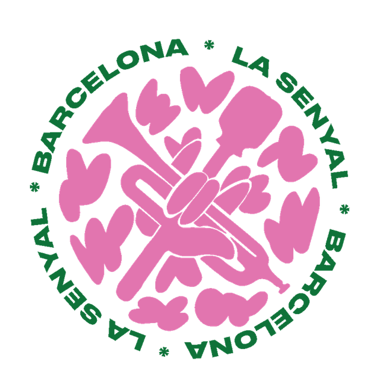

/ La Senyal /

AdminWebsite
lasenyal.com
- Texts in CA · ES · EN
- Concerts, members, photo strip
- Extra pages and the menu
- Contact, footer, main photos, colours
PDFs
Press kit (CA · ES · EN)
- Emails link to lasenyal.com/dossier/ca/ (or /es/, /en/). It always gives the PDF chosen here.
- New version: upload it and choose it, or upload one with the same name and choose Replace.
First time: how to sign in
You sign in with a GitHub token (a long password made for this). You paste it once per browser; it is kept there until you sign out.
- Sign in to GitHub with an account that is a member of ciaVENDAVAL.
- Open New fine-grained token.
- Token name:
La Senyal admin. Expiration: up to one year. - Resource owner:
ciaVENDAVAL. - Repository access: Only select repositories →
lasenyal-web. - Permissions → Repository permissions → Contents: Read and write.
- Generate token, copy it, open Website above, choose Sign In Using Access Token and paste it.
If ciaVENDAVAL doesn't allow fine-grained tokens, use a classic token with only public_repo ticked.
Keep the token private, like a password. If it leaks, delete it on GitHub (Settings → Developer settings) and make a new one.
How it works
- Each Save goes straight to the live site. It shows up after about 1–2 minutes (reload the page).
- Every change is kept in GitHub's history, so anything can be undone.
- Photos: upload them as they are (simple file names without spaces or accents, e.g.
concert-ocana-2026.jpg). The original is kept untouched insource-images/; huge phone photos are shrunk, the small version for the photo strip is made automatically, and member photos are cropped square. This takes a minute more. - Replace a photo without changing any text: Assets (picture icon, top left) → choose the photo → ⋮ → Replace, or upload one with the same name.
- New page: Pages → New, fill in the three languages, save. Then add it in Menu to link it.
- Credit the photographer of every photo (tell Claude or add it to
source-images/README.md). - On a phone it works too: the menu is behind ☰.
Made with Sveltia CMS · repo ciaVENDAVAL/lasenyal-admin